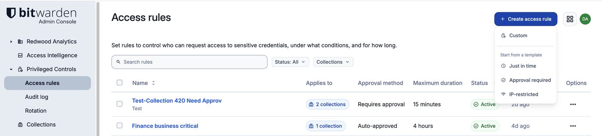
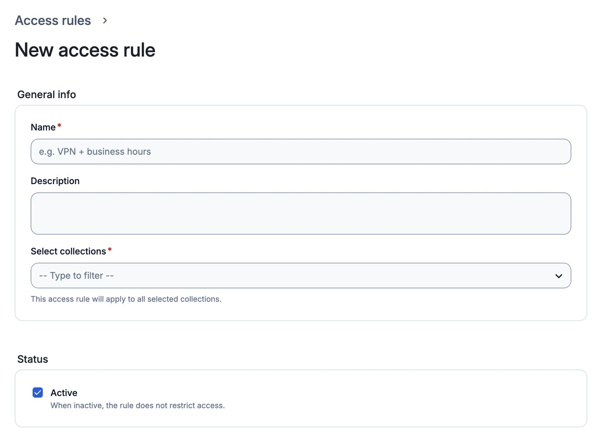
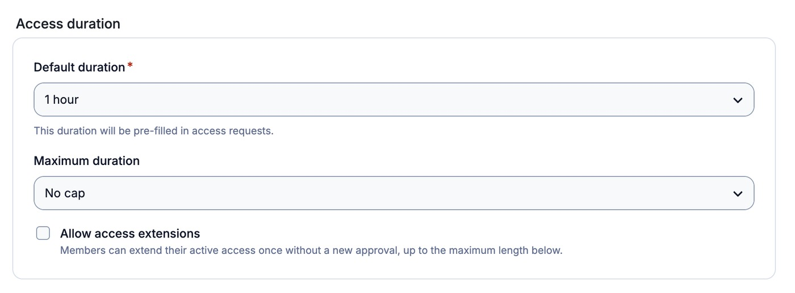
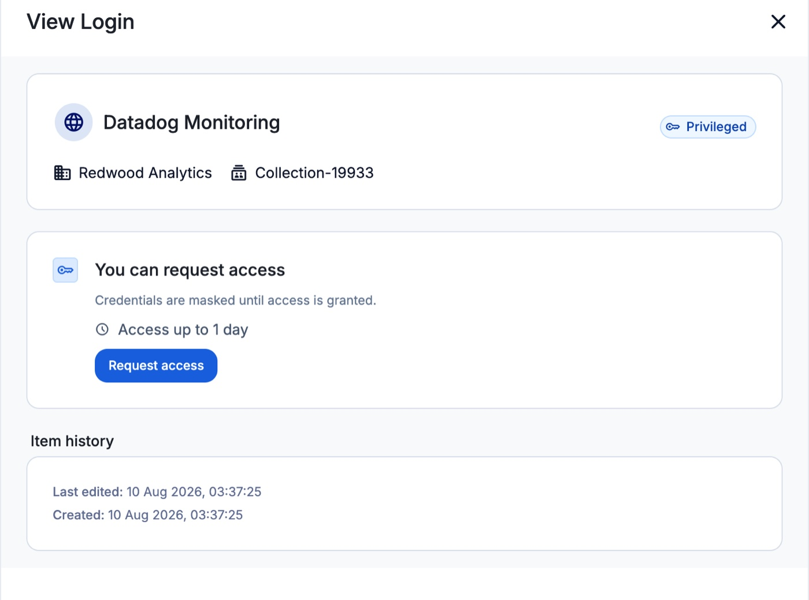
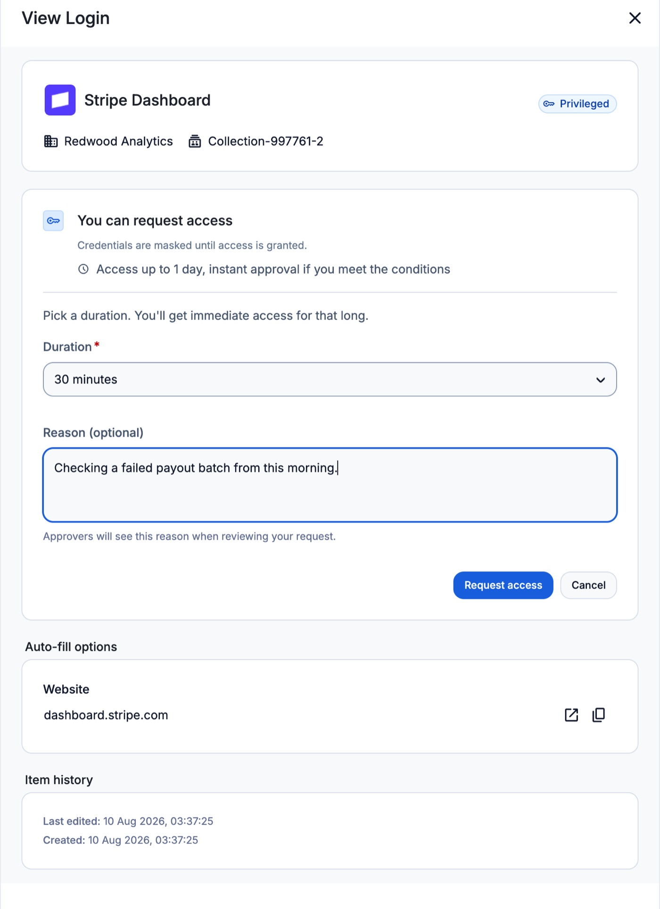
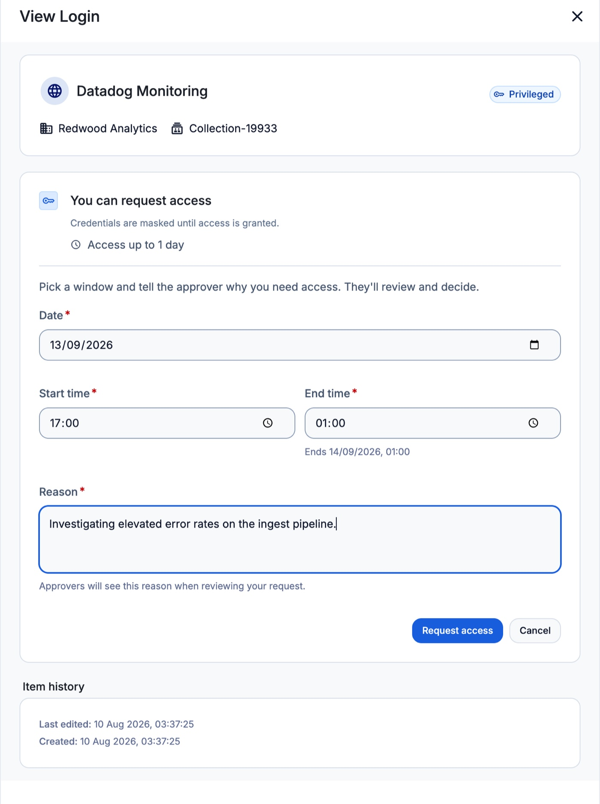
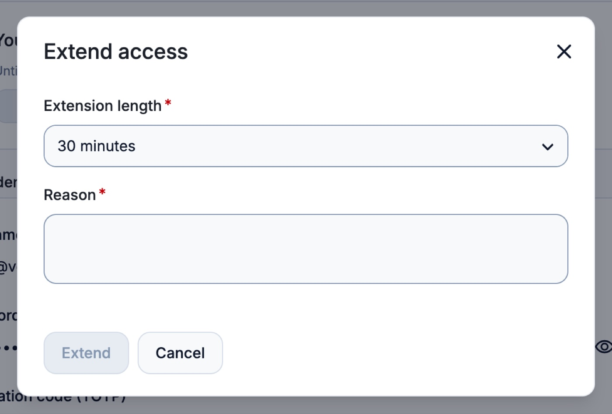
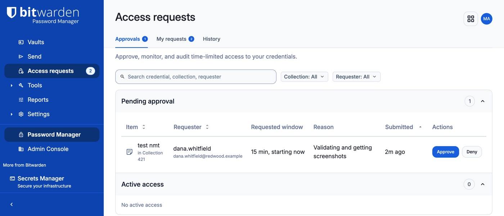
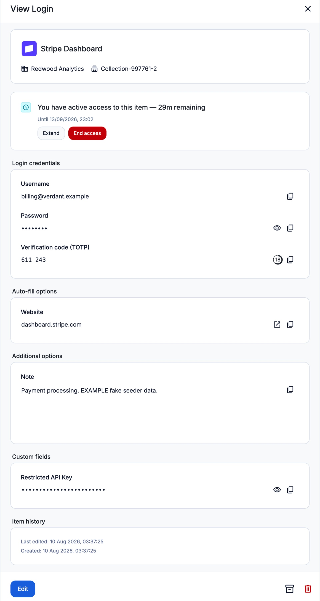
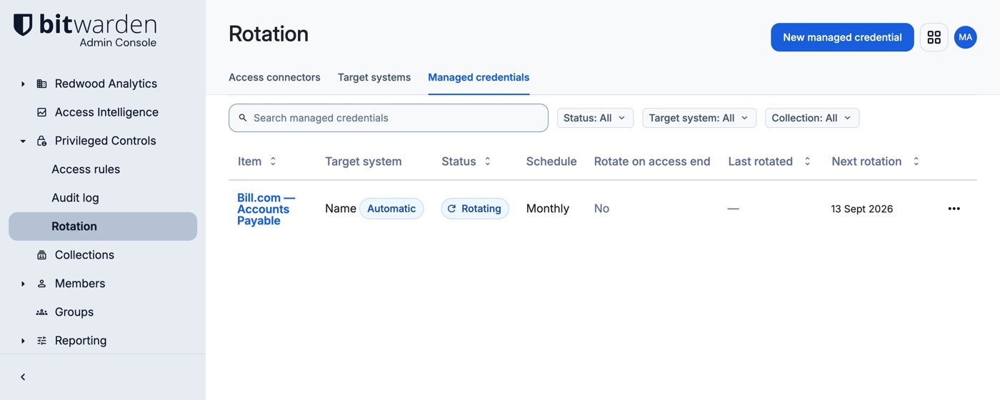

Privileged Controls
Private preview
Privileged Controls is an add-on for Bitwarden Enterprise organizations that limits standing access to sensitive credentials. Protected credentials remain hidden until access is requested and granted, access is time-limited, and passwords can be rotated on a schedule or after use.
This guide explains how Privileged Controls works, how to configure it, how to request and approve access, and what to test during the private preview. Configuration sections are for organization admins. Request and approval sections also apply to members and approvers.
This guide covers the private preview and is not final documentation. Screens and labels may change, and some capabilities are incomplete. Before evaluating a specific feature, review What's not in this preview yet.
What Privileged Controls does
Privileged credentials include production database passwords, domain admin accounts, and root credentials for infrastructure. Without the additional protections of Privileged Controls, shared credentials can remain readable to every member with collection access and may stay valid indefinitely.
Privileged Controls reduces both forms of standing access:
The credential remains hidden until access is granted. Members can see that the item exists, including its name and website, but the server never sends the username, password, or other credential fields to the client, so a modified client cannot reveal them.
Access is time-limited. When a request is granted, the member can use the credential only for the permitted window. When access ends, the credential fields are hidden again.
Credentials can be rotated. Rotation changes the password on the target system and updates the vault item to match. Rotation can run on a schedule or when access ends.
Each request, approval, access period, and rotation is recorded, so you can see who requested, approved, and used a credential, and when.
How it fits together
A typical access cycle works as follows:
- You create an
access ruleand apply it to a collection. -
Items in that collection become
privileged: visible, but with their credential fields hidden. - A member
requests accessto one. - Depending on the access rule, the request is approved automatically or sent to an approver group.
-
Once the request is approved, the member
startstheir access, and the clock begins. - The member uses the credential, then ends access or lets the time run out.
-
If the credential is under
rotation, finishing can trigger a new password. - The audit log records every step.
Approval does not reveal the credential. After a request is approved,
the member must select Start access before the credential becomes
available. See
When your access actually starts
for timing details.
The four capabilities
Decide who gets access, and for how long
An access rule defines the access requirements for one or more collections. Every item in a privileged collection is governed by that rule.
A rule has two groups of settings. Access duration sets the default and
maximum access periods and whether a member can extend active access.
Optional conditions can require approval, restrict requests by network, or
limit the item to one active user at a time.
Requests are auto-approved unless Require approval is enabled. Three
templates provide common starting configurations, and you can edit any setting before
saving.
Get a credential when you need it
Credential leasing is how members reach a privileged item. They request access from the
item itself. Depending on the rule, the request is approved immediately or sent to an
approver group with the member's reason. After approval, the member selects
Start access to reveal the credential. If the rule allows extensions, the
member can extend active access once, up to the rule's maximum duration.
Change credentials automatically
Password rotation links a vault item to a target system through an access connector. Bitwarden can then rotate the password on a schedule, on demand, or when a member ends access.
A rotation is reported as successful only after the connector applies the new password and verifies that it authenticates. The verified value is then written to the vault.
For systems that cannot be rotated automatically, Privileged Controls can track the rotation schedule, flag overdue credentials, and record manual rotations.
See who used what
The audit trail records requests, approval decisions, access starts and ends, and rotation activity. It shows who requested and used a credential, who approved or denied access, the recorded reasons, and relevant timestamps.
Before you start
The preview environment is preconfigured, rotation included. You do not need to provide anything to work through this guide.
What Bitwarden provides
- A mock organization on the Bitwarden preview instance with Privileged Controls enabled. It is separate from your production tenant.
-
Two test accounts: an admin account for configuration and an account
with
Managepermission for approvals. Because users cannot approve their own requests, use the second account yourself or assign it to a colleague when testing the approval flow. - Seeded collections and credentials for testing request and approval workflows without creating test data first.
- A working rotation environment. An access connector is registered and running, with target systems configured against it and rotation jobs already in place. You can put credentials under rotation, trigger jobs, and read the results without installing or configuring anything.
What you need to bring
Nothing. The preview environment is complete, rotation included.
Do not use production credentials in the preview environment. The private preview does not carry the guarantees of a production Bitwarden deployment. Use test credentials and test accounts only.
The access connector is not distributed in this preview, so running one yourself is not part of the exercise. To evaluate it and give early developer-experience feedback, email privileged-controls@bitwarden.com and Bitwarden will provide the connector and its own guide.
Test the approval flow with a second person at least once, so you see the handoff between requester and approver rather than only your own two accounts.
Protect your first collection
Complete the full request, approval, start, and end-access flow once before moving to the remaining sections.
Create a collection
You can create a collection from either the Password Manager web app or the Admin Console.
-
Select the
Newbutton and chooseCollectionfrom the dropdown. -
Give the collection a
Name, and choose theOrganizationit belongs to. -
On the
Accesstab, assign any members or groups who should reach it. - Select
Save.
Name the collection for the resource it protects rather than the team that uses it. For
example, prefer Production database to Ops team. Access rules
apply at the collection level.
Add a single login item to it.
For more on collections, see Create Collections and Collection Permissions.
The preview organization includes seeded collections and credentials. You can apply a rule to one of them instead of creating a new collection.
Create an access rule
-
Open the
Admin Consoleand selectPrivileged Controls→Access rules. -
Select
Create access rule. You can build one from scratch withCustom, or start from a template:
The Access rules list, with the Create access rule menu open
| Template | Gives you |
|---|---|
Just in time |
Access granted on request, with no approver in the way |
Approval required |
Every request goes to a person before access is granted |
IP-restricted |
Requests only accepted from networks you nominate |
Templates pre-fill the settings. You can change any setting before saving.
-
Under
General info, enter aNameand, optionally, aDescription. Name the rule for its conditions rather than its owner; for example,VPN + business hours. -
In
Select collections, choose the collections this rule applies to. You can pick several, and the rule governs every item in all of them. -
Under
Status, leaveActiveselected. An inactive rule does not restrict access, so you can prepare a configuration before enabling it.
General info and Status. A rule applies to every collection you select
-
Under
Access duration, set:-
Default duration, which is pre-filled for members when they request access. -
Maximum duration, the longest a single stretch of access may run, counted from the moment someone starts it.No capleaves it unbounded. -
Allow lease extensions, if you want members to extend an active lease once, up to the maximum duration, without asking anyone again.

Access duration. Allow lease extensions lets a member add time once without asking again -
-
Under
Optional conditions, tick any that apply:-
Require approvalsends each request to an approver group before access is granted. Leave it unticked and requests are auto-approved. -
Restrict by IP addresslimits which networks a request may come from. -
Only 1 user can have active access at a time.Others with approval can attempt to start once the current access ends or is revoked.

Optional conditions. Leave Require approval unticked and requests are auto-approved -
- Save the rule.
For the first test, enable Require approval and set a short maximum
duration so the approval and countdown states are easy to verify.
A collection can only be governed by one rule at a time. If you select a collection that already has one, you will be asked to pick different collections.
Back on the Access rules list, each rule shows what it
Applies to, its Approval method (Auto-approved or
Requires approval), its Maximum duration, and its
Status.
See what a member sees
Go to your organization vault and find the item. In the
Controlled access column it now carries a Privileged badge.
Items with no rule on them read No access rule instead.

In the vault, use Filters → Controlled access →
Privileged or My requests to find privileged items and
requests.
Open the item. Its name and website are still there, and you can still copy the website
from Autofill options. The password, any TOTP verification code, and every
other credential field are absent, not merely masked. A card at the top reads
You can request access, with "Credentials are masked until access is
granted." beneath it, and below that the longest access this item allows.
Organization admin status does not by itself reveal a privileged credential.

The item card indicates the approval method. "Access up to 4 hours, instant approval if you meet the conditions" means automatic approval. "Access up to 4 hours" without the instant-approval text means approval is required.
Request it once, end to end
- Select
Request access, fill in the form, and submit. -
Ask your colleague to approve it from
Access requests→Approvals. You cannot approve your own request. -
After approval, confirm that the card reads
Access approvedand that the credential remains hidden until access starts. -
Select
Start access. The credential appears in place, and the card starts counting down. - Select
End accessand confirm that the credential is hidden again.
If the cycle completes as described, continue with the detailed request, approval, rotation, and audit workflows below.
Request access to a credential
The request flow depends on whether the access rule requires approval.
When nobody has to approve
-
Find the item in your organization vault. Privileged items show a
Privilegedbadge in theControlled accesscolumn. -
Open the item and select
Request access. The form opens in the item card and reads "Pick a duration. You'll get immediate access for that long." -
Choose a value from
Duration. The list contains only durations allowed by the rule. - Optionally, enter a reason in
Reason (optional). -
Select
Request access. You are granted it immediately, a message reads "Access approved — select Start access to begin.", and the item's badge changes toReady to use. -
Select
Start access. You will see "Access started.", and the item card displays the remaining access time. -
Copy or use the credential. The credential fields appear in the existing item view;
you do not need to reopen the item.

The request form on an auto-approved item, with the Duration dropdown and an optional Reason
When someone has to approve
- Open the item and select
Request access, as above. - Set the
Dateyou need it on. -
Set a
Start timeandEnd time. The form pre-fills a window starting now. If the end time is earlier than the start time, it is interpreted as the next day; the form displays the resulting end date and time. -
Enter a
Reason. A reason is required for requests that need approval.
The request form when approval is required: Date, Start time, End time and a required Reason
-
Select
Request access. The message "Request submitted — awaiting approval." appears, the item card changes toAccess request pending approval, and the vault badge changes toPending approval. -
To review the request, open the item or go to
Access requests→My requests. Pending requests show the requested window and submission time. The navigation displays a counter while requests are outstanding. -
Once someone approves it, the card reads
Access approvedand the badge changes toReady to use. The request moves fromPendingtoActive access, where the status shows how long you have left to start it, for example "Activate within 9m". -
Select
Start access. The message "Access started." appears, the request shows the remaining access time, and the credential becomes available.
The item while the request waits on an approver, showing the amber Pending approval badge
When your access actually starts
Access begins when you select Start access. Approval alone does not start
it. For an approved time window, the end time is fixed by the approved request; starting
late does not move that end time. Start as early in the window as you can, because a
late start shortens your usable access.
The card can display the requested duration even when less time remains in the
approved window. Use the Until time as the effective end of access.
For immediate-access approvals, you have 24 hours from approval to start
access. For scheduled requests, you must start within the approved window. If the
activation period expires, submit a new request.
Book access ahead of planned work
To request access for planned work, submit the request in advance and set the
Date, Start time, and End time to the required
window.
Scheduled access does not start automatically. Select Start access during
the approved window, or the approval expires unused. Set a reminder for the start of
the window.
You cannot start access before the approved window. If you try, the message "The approved access window has not started yet." appears.
If something goes wrong
| What you see | What it means |
|---|---|
"Someone else has access to this item right now." |
The item allows one active user at a time. You can submit the request and start access after the current access ends. |
"Another active lease exists for this item. Try again once it
ends."
|
Another user has active access. Try again after that access ends. There is no queue. |
"You already have active access to this item." |
Close the request form and use the active access shown on the item card. |
"You already have an approved request for this item."
|
An approved request already exists. Use the existing request. |
"End time can't be the same as the start time." |
Choose different start and end times. |
"The requested window has already ended." |
The entire requested window is in the past. A window that has already started can still be requested if its end time is in the future. |
"The window can't exceed…" |
The requested window exceeds the rule's maximum duration. Shorten the window. |
"Could not request access." |
The request was not submitted. Retry the action. |
| Refused the instant you asked, with no approver involved | The request failed an automatic condition. In this preview, that indicates an IP restriction. |
An End time earlier than the Start time is treated as the
next day. For example, 23:00 to 01:00 creates a two-hour window across midnight.
Extend access you are already using
If the rule has Allow lease extensions enabled, an
Extend button appears beside End access, and you can extend
active access once instead of submitting a new request.
- Select
Extend. -
In the
Extend accessdialog, choose anExtension length. -
Write a
Reason. This one is required, andExtendstays unavailable until you do. -
Select
Extend. You will see "Access extended.", theUntiltime moves out, and the countdown on the card restarts from the new end.
The Extend access dialog. Extend stays unavailable until a reason is written
Extension behavior:
-
You extend once, without a new approval. Even on a rule that requires
approval for the original request, the extension does not go back to an approver. Once
you have used it, the
Extendbutton disappears and onlyEnd accessremains. - It applies in place. The end time on the access you already hold moves out. You are not given a second, separate stretch, and you do not have to start anything again.
- It is still bound by the maximum duration on the rule.
Extend before your access expires. After expiration, you must submit a new request and complete any required approval flow.
If extensions are disabled, additional time requires a new request. If the rule requires approval, the new request must also be approved.
Approve someone else's request
The Approvals tab appears on the Access requests page when
requests are routed to you for review.
To approve a request, you need Manage permission on the item's collection
or membership in an approver group for the item. Organization admin status alone does
not grant approval permission.
- Open
Access requestsand select theApprovalstab. -
Under
Pending approval, review requests assigned to you. UseCollectionorRequesterfilters as needed.
The Approvals tab, with a request waiting under Pending approval
-
Review the
Item,Requester,Requested window, andReason. If no reason was provided, the row displays "No reason provided". - Select
ApproveorDenyon that row. - Review the request summary in the dialog, including the item, requester, requested window, and reason.
-
Add a note if needed. For approvals,
Commentis optional and is saved to the audit log. For denials,Reason for denialis required. -
Confirm with
Approve requestorDeny request.
The Deny access request dialog. A Reason for denial is required
You can switch from approval to denial within the approval dialog by selecting
Deny request. The audit record stores the decision you confirm.
Example: A member requests 09:00 to 17:00 for an item with a two-hour maximum duration. If the request is approved at 08:30 and the member starts access at 14:00, access runs from 14:00 to 16:00.
Extensions do not require a second approval. If Allow lease extensions is
enabled, a member can extend active access once, up to the maximum duration. To
require approval for additional time, leave extensions disabled so the member must
submit a new request.
If something goes wrong
| What you see | What it means |
|---|---|
"You cannot approve your own request." |
Someone else with Manage permission on that collection has to decide it. |
"Could not record decision" |
The decision was not saved. The request remains pending; retry the action. |
"No access requests match your filters." |
The current search or filters exclude the request. Clear or adjust them. |
"Inbox zero" and
"There are no requests waiting for your decision."
|
No requests are awaiting your decision. |
| The request has vanished from the list |
The requester withdrew it, another approver got to it first, or it lapsed. Check
the History tab.
|
End your access early
When you have finished with a credential and there is still time on the clock, you can end your access rather than letting it run down.
Access ends on its own when the permitted time expires. End it early if another user may be waiting for the item, or if the item is configured to rotate when access ends.
While access is active, the item card displays
You have active access to this item, the remaining time, and an
Until timestamp. Under Login credentials, the username,
password, and Verification code (TOTP) are available as applicable. In the
vault list, the item badge displays the remaining access time.

To end access early:
-
Open the item, or go to
Access requests→My requestsand find it underActive access. - Select
End access. -
A dialog headed
End access?warns you that this immediately revokes your access and cannot be undone. SelectEnd accessagain to confirm.
You will see "Access ended.", the credential fields disappear, and the card goes back to
You can request access.
Ending access is final for the current request. To regain access, submit a new request and complete any required approval flow.
Set up automatic password rotation
Configure rotation in the Admin Console under
Privileged Controls → Rotation.
For the private preview, the parts of rotation that run in your own infrastructure are already set up for you. An access connector is registered and running, and target systems are configured against it. What is left for you to do is the part most organizations will spend their time on: deciding which credentials rotate, on what trigger, and on what schedule.
What you are building
Rotation uses three components: an access connector, a
target system, and a managed credential.
The access connector runs in your environment and connects to systems whose
credentials Bitwarden rotates. Connection details and service credentials remain local
to the connector.
The target system defines the system name, integration type, and password
requirements such as length and allowed characters. A target system can be reused across
multiple managed credentials.
The managed credential links a vault item to a target system and stores the
account identifier and rotation triggers.
The server schedules rotation work and the connector performs it. The server does not receive the target's plaintext password.

Choose an integration type
| Type | Rotates |
|---|---|
Entra |
Microsoft Entra ID accounts, identified by UPN or email |
Custom script |
Anything else you can automate with a Bash or PowerShell script on the connector host |
Manual |
Nothing automatically. Bitwarden tracks the obligation and a person does the work |
The access connector
Select the Access connectors tab to see the connector serving this preview
environment.
In a production deployment you register a connector here, receive a token, and deploy the connector somewhere it can reach the systems you want to rotate. It runs in your infrastructure, holds the connection details and service credentials locally, and the Bitwarden server never receives them.
In this preview the connector is already registered and running, so there is nothing to install. The tab shows whether a connector is connected and which target systems it serves.
Target systems
Select the Target systems tab to see the systems credentials can be rotated
on.
A target system records the system's name, its integration type, and the password requirements it enforces, such as length and allowed characters. One target system can be reused across many managed credentials, which is why the password rules live here rather than on each credential.
Connectors are assigned to target systems, and a connector can only claim work for the targets it has been assigned. That assignment is the security boundary. Several connectors can serve one target for redundancy, and one connector can serve many targets.
The preview environment has target systems already configured, so you can go straight to putting a credential under rotation.
A target system's type and rotation method are fixed when it is created. Changing either means deleting the target system and creating a new one.
Put a credential under rotation
-
Select the
Managed credentialstab and create a new managed credential against one of the existing target systems.NoteA managed credential's target is also fixed at creation.
- Enter the account's identifier on that system.
- Set a schedule. You can pick an interval or write a cron expression for exact timing such as a maintenance window. Schedules run in UTC, and the shortest interval accepted is fifteen minutes.
- Optionally, configure the credential to rotate when access ends. This invalidates the password that was available during the completed access period. The rotation runs after the access window closes, not during active access.
-
Select
Rotate nowand watch the job run. In a production deployment you would always do this before relying on a new configuration.
Rotate on demand, or record one you did by hand
From the Managed credentials tab, each row offers:
Rotate now, which queues an immediate rotation job.-
Mark as rotated, for recording a change you made outside Bitwarden. Remove from rotation.
Rotation history for a credential is on its History tab, one row per job,
with the result, duration and number of attempts. Select a row to see why a job failed.

For manual credentials, Bitwarden cannot read the target's password requirements. The password generator therefore uses a generic default. Verify that a generated value meets the target system's requirements, or enter a value you have already set on the target.
Custom scripts and running your own connector
Custom scripts are written in Bash or PowerShell, so the connector can run them on Linux and Windows on both ARM and x64, and on macOS on ARM.
The custom script path, and the access connector that runs it, are not part of the private preview. The connector is not distributed yet, so there is nothing to deploy and no script contract to write against.
To evaluate that side of rotation and give early developer-experience feedback, email privileged-controls@bitwarden.com. Bitwarden will provide the connector and its own guide.
Rotating a credential can interrupt dependent services. This preview does not restart services, update scheduled tasks, or propagate the new value beyond the vault and target account. For service accounts, schedule rotation during a maintenance window and test with a non-production dependency first.
See who used what
Use the request history, audit log, or managed credential history depending on the scope and retention period you need.
Your own recent requests
Open Access requests → History for resolved requests from
the last 90 days: what was asked for, what was decided, who decided it, and
the reason they gave. Denials always carry a reason, because approvers cannot deny
without writing one.
History is permission-scoped. Members see their own requests. Approvers and admins see requests and access for collections they have permission to view, including requests they did not decide.
The full audit log
For organization-wide events without the 90-day request-history limit, open the
Admin Console and select Privileged Controls →
Audit log.
Each row includes the Timestamp, Event, Actor,
Requester, Item, and Duration where applicable.
Narrow it with the filters along the top:
| Filter | Answers |
|---|---|
Event |
"Which requests were denied?" |
Actor |
"What has this person done?" |
Requester |
"What has been asked for on this person's behalf?" |
Item |
"Who has touched this credential?" |
Time period |
Today, the past 7 days, the past 30 days, all time, or a range you choose |
Select Export to download the filtered results.

What gets recorded
The audit log includes the following event types:
Requests and decisions
Access requestedRequest approvedRequest deniedRequest canceledRequest expired without a decisionApproval expired unused
Access itself
Lease activatedLease extendedLease expiredLease revokedActivation rejectedCredential accessedCredential access denied
Rules and organization-wide actions
Access rule createdAccess rule updatedAccess rule deletedKill switch triggeredLeasing frozenLeasing unfrozen
Rotation activity is recorded here too, alongside the per-credential rotation history on
the History tab of a managed credential.
To review access to a specific credential, filter by Item, set
Time period, and export the results. As part of the preview, confirm
whether the exported record meets your audit requirements.
Change or remove an access rule
Rule changes apply prospectively. Editing, deactivating, or deleting a rule does not revoke access that has already been granted.
-
Open the
Admin Console→Privileged Controls→Access rules. -
Find the rule. Each row shows what it
Applies to, itsApproval method, itsMaximum duration, and whether it isActiveorInactive. -
Open the row's
Optionsmenu and choose what you want:Editto change the rule's terms, thenSave.-
Deactivate ruleto stop it applying to new requests without losing the setup. The row turnsInactive, andActivate ruleturns it back on. -
Deleteto remove it permanently. The collections survive; they simply stop being privileged.
To change several at once, tick the rows and use the actions in the bar that appears.
Active access continues until its current end time, and an already approved request can still be started. The delete dialog states that collections "will have leasing disabled". This applies to new requests only.
Example: If a rule's maximum duration is reduced from eight hours to one hour at 14:00, a request approved at 13:00 under the previous limit keeps its approved duration. Requests made after the change use the new one-hour maximum.
If something goes wrong
| What you see | What it means |
|---|---|
"Another rule already uses this name." |
Names are unique within an organization. |
"Another access rule already covers one of these
collections."
|
A collection can only be governed by one rule. Take it off the other rule first. |
"This rule no longer exists. It may have been deleted by another
admin."
|
The rule was deleted after the page loaded. Refresh the list. |
| Items are still privileged after deleting the rule | Check whether another rule also covers that collection, and give the vault a moment to refresh. |
| Items became visible to people you did not expect | Removing the rule exposes whatever the collection's permissions already allowed. Deleting a rule does not change who is in the collection. |
| A copied rule governs nothing | Copied rules do not include collections because each collection can be governed by only one rule. |
What to test
Test the workflows you would use. You do not need to complete every item. Report both what worked and what you could not complete or chose to skip.
Setting things up
- Create a rule from each of the three templates. Note whether the templates match the access requirements you would set and whether another template would be useful.
- Create one
Customrule from scratch and compare the effort. -
Compare an auto-approved rule with one that has
Require approvalticked. -
Set
Maximum durationtoNo capand assess whether that option is appropriate for your organization's security requirements. -
Tick
Restrict by IP addressand try saving without entering any ranges. - Apply a rule to a collection that already has members and history, not just a fresh one.
- Define a specific approver group rather than defaulting to everyone with Manage permission.
- Try to apply two rules to one collection.
- Set a maximum duration that matches your operational needs. Note whether the available options are sufficient.
Requesting and approving
- Request access on an automatic item, and on one needing approval.
- Approve a request, deny one, and read both back in
History. - Open the approve dialog and switch to deny without closing it.
- Ask for a window that crosses midnight.
- Cancel a request while it is pending, and cancel one after it has been approved.
- Leave an approved request unstarted and confirm that it expires.
- Have two people request the same one-at-a-time item and assess how clearly the contention state is presented.
- Book a window for a future date and start it on the day.
Time limits
- Approve a request, wait before starting it, and confirm that the resulting access period matches the documented behavior.
- Let access expire on its own rather than ending it.
- End access early and confirm the credential disappears.
-
Turn on
Allow lease extensions, then extend an active stretch of access, and try to extend a second time. - Try to add time on a rule where extensions are disabled and assess whether the reason is clear.
Rotation
- Put one of the seeded credentials under rotation against an existing target system.
- Set a schedule and assess whether the interval and cron options match the rotation cadences your organization requires.
- Run a rotation on demand and review the resulting job status.
- Set a credential to rotate when access ends, then request access and end it.
-
Read a credential's rotation
Historyand assess whether a job's result, duration and attempt count tell you what you would need to know. - Set up a manual target, let it go overdue, and record a rotation by hand.
-
Review the
Access connectorsandTarget systemstabs and assess whether they show what you would want to monitor in your own environment. - Pause rotation on a credential, then resume it.
Audit and evidence
- Answer this question using only the product: who accessed a given credential in the last month, when, and why?
- Check whether the resulting record meets your audit requirements.
Things worth trying to break
- Approve your own request.
- Request access from a network outside an IP allowlist, then move onto an allowed network between being approved and starting.
- Delete a rule while someone holds active access under it.
- Lower a maximum duration while someone is approved under the old one.
- Remove someone from a collection while they hold access.
Most useful feedback
- UI wording that did not match the resulting behavior.
- Behavior that was unclear from the UI or documentation and required experimentation.
- Actions the product allowed that you expected it to prevent.
- Whether the audit evidence matches the records your auditors or insurers require.
- Requirements that would need to be met before you would protect a production credential with Privileged Controls.
- Whether approved access should use a fixed window or a duration. Approval-based requests currently specify a start and end time, so starting late can reduce the usable period. Would you prefer to request a duration that begins when access starts, similar to the auto-approved flow?
What's not in this preview yet
Web app only. Privileged Controls is not yet in the browser extension, the desktop apps, the mobile apps, or the CLI. Requesting, approving and starting access all happen in the web app.
No organization-wide controls. The preview does not include an emergency off switch to revoke all active access, a freeze on new access, or a governance dashboard for organization-wide active access. Individual access can still be revoked.
The access connector is not distributed yet. Rotation runs against a connector Bitwarden hosts for the preview, so you cannot deploy one in your own environment or rotate credentials on your own systems. That includes the custom script path, which runs on the connector. To evaluate this side of rotation, email privileged-controls@bitwarden.com.
Limited rotation integrations. Automatic rotation covers Microsoft Entra ID, plus the custom script path for anything you can automate yourself. Other systems can be tracked as manual rotation obligations. Your feedback on which systems you need will shape which integrations come next, so note what would matter most in your estate.
Rotation settings are per credential. You cannot yet apply a rotation schedule across a whole collection, or to every credential of the same type, in one action.
Rotation does not orchestrate dependencies. Restarting services that use a rotated credential, updating scheduled tasks, and post-rotation scripting are all out of scope for now.
Vault export behavior is not final. Do not treat the current export behavior for privileged items as the expected general-availability behavior.
UI wording may change. Rotation screens are still being revised, so labels in this guide may not exactly match the preview UI. Report any mismatches or wording that is clearer in the product.
Limits and timings
| Limit | Default | What it bounds |
|---|---|---|
| Time to decide a request | 7 days | How long a request waits for a person before it lapses |
| Time to start approved access | 24 hours | How long an approval for immediate access stays startable |
| Booked window | You choose | An approval for a specific window must be started inside it |
| Default duration | 1 hour | Pre-filled for members when they request access. Set per rule |
| Maximum duration | Per rule |
The longest a single stretch may run, counted from when you start it. Can be set
to No cap
|
| Extensions | Off |
When Allow lease extensions is on, a member can extend once per
stretch of access, without a second approval
|
| History | 90 days | How far back resolved requests appear |
| Shortest rotation interval | 15 minutes | The shortest schedule accepted |
Who can do what
| Action | Requires |
|---|---|
| See that a privileged item exists, and request access to it | Membership of a collection holding it |
| Start your own approved access | Nothing further. Only you can do this |
| End your own access early | To be the person holding it |
| Approve or deny a request |
Manage permission on the collection, or membership of an approver
group for it
|
| Revoke someone else's active access | Membership of an approver group for that item, or organization admin |
| Create, edit or delete access rules | Organization owner or admin |
| Configure rotation, connectors and target systems | Organization owner or admin |
Approving is not administering. A collection manager who is not an admin can approve requests but cannot change rules. An admin with no Manage permission on a collection cannot approve its requests.
Users cannot approve their own requests. This restriction also applies to organization admins and owners.
Send feedback
Email privileged-controls@bitwarden.com. Please include:
- What you were trying to do.
- What you expected, and what happened instead.
- The exact wording of anything on screen, if it is relevant.
- Roughly when it happened, so the team can find it.
Bitwarden will also hold a research interview with each preview participant. Schedule a time that works for you. Keep notes during testing, especially on initial confusion, unexpected behavior, and missing information, so you can refer to them during the interview.
Thank you for taking part in the private preview.